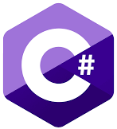

During my six-month vacation after finishing my A-levels to enroll in a diploma program in
software engineering at IPMC, where we learned HTML, CSS, SQL, and other programming languages.
This increased my enthusiasm to switch to technology, and I quickly decided to change fields
from medicine to computer science. As a consequence, I applied to a Ghanaian institution using
my IGCSE results, and I was lucky to get accepted.
To begin with, I started my self-study adventure during my first year of university by talking
to other software engineers to learn about the job and then started my self-study path on
Coursera by earning a certification in HTML/CSS and WordPress.
Get to know about me
LORRAINE: Aspiring Software Engineer/Full-Stack Developer | Second-Year Computer Science Student


An ambitious second-year Computer-Science student aspiring to be a proficient full stack
developer via self-study, certificate acquisition, internships and on the job training. I'm
eager to learn various aspects of software engineering including Front-end, Back-end, web
development frameworks, debugging, software writing and testing as well as any other beneficial
knowledge.Personally, I enjoy spending time with friends and family, reading, and listening to
music.In addition, I am a devout Christian who strives to improve my connection with Jesus.
Along with my loving father, my
mother is the person closest to my heart, and I would sacrifice anything for her, even if she
sometimes irritates me.
What have I engaged in so far?
My Journey with Freecodecamp
I had to enroll in Freecodecamp as a second-year student in order to have a solid understanding of web programming. This has been really beneficial since I have learned more in addition to the skills that were taught on Coursera. My biggest issue has been consistency; I can't keep up my practice and streak every day. But even with what little I can accomplish, it is undoubtedly highly inspiring. Along with other study tools like Coursera, Udemy and YouTube channels such as BroCode, SuperSimpleDev and many others, I will undoubtedly advance.
With Freecodecamp, the Responsive Web
Design module involves various courses which involve hands-on practice to boost learning
skills. These include:
Challenges faced.
Although Freecodecamp has been quite helpful, you are not always guided to the specific code problem, which occasionally makes fixes a little stressful. In certain cases, the hint provided has nothing to do with the mistake. Additionally, having an acknowledgment of recognition upon finishing a course would be wonderful as a source of inspiration. Furthermore, the website isn't compatible with smaller devices, such as phones, which makes it difficult to study in any way while you're using your phone in your spare time. Also, some of the steps' content is too brief to effectively increase students' comprehension of the course.
Acquired and Future talents
Despite consistently practicing HTML/CSS and other programming languages, I am still not proficient in them and have not yet been able to work on any completed projects. I have acquired some of these skills, though, and I still have more to learn.
